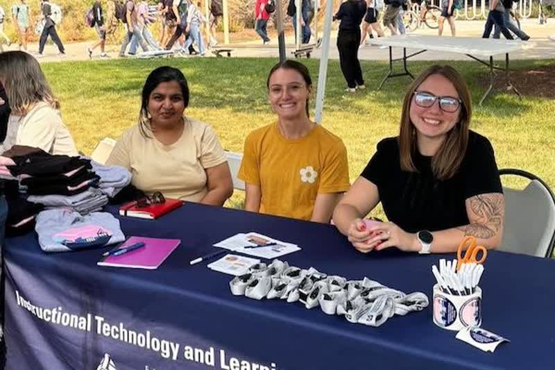

Undergrads Receive Robust Opportunities to Thrive in Nationally Funded Research Projects
Each semester, Lu Lawrence, assistant professor in the Department of Instructional Technology and Learning Services (ITLS), hires undergraduates to assist in an ongoing collaborative research project, Project UNITE, that aims to impact the lives of young adults with disabilities who are transitioning from high school. Here is Malin Scharmann's shared experience as a Research Assistant for Project UNITE.
View